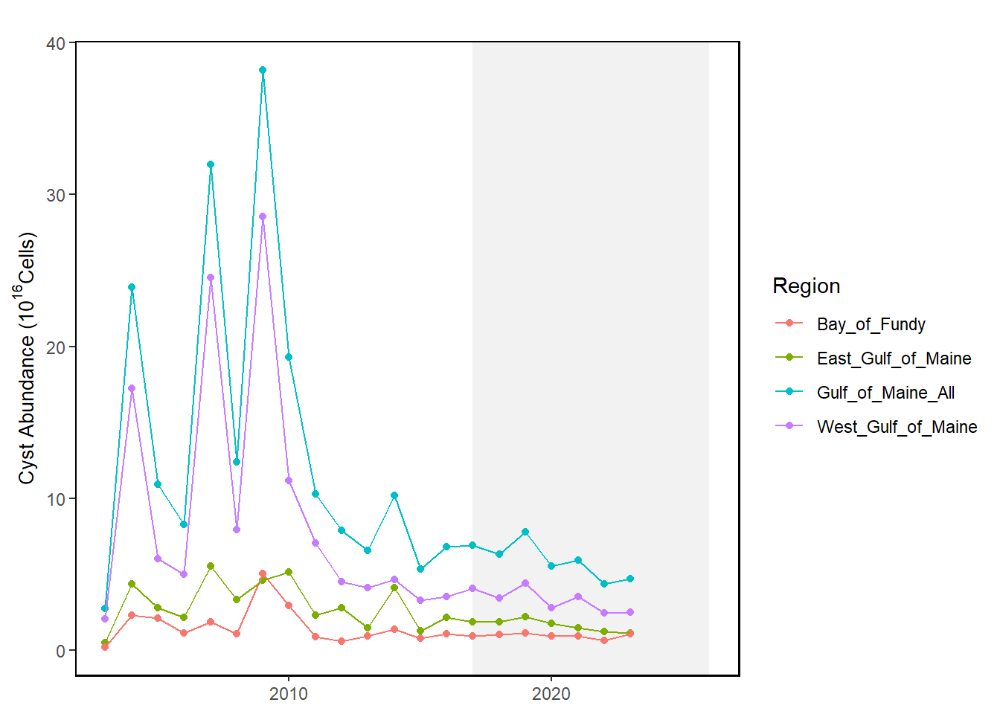
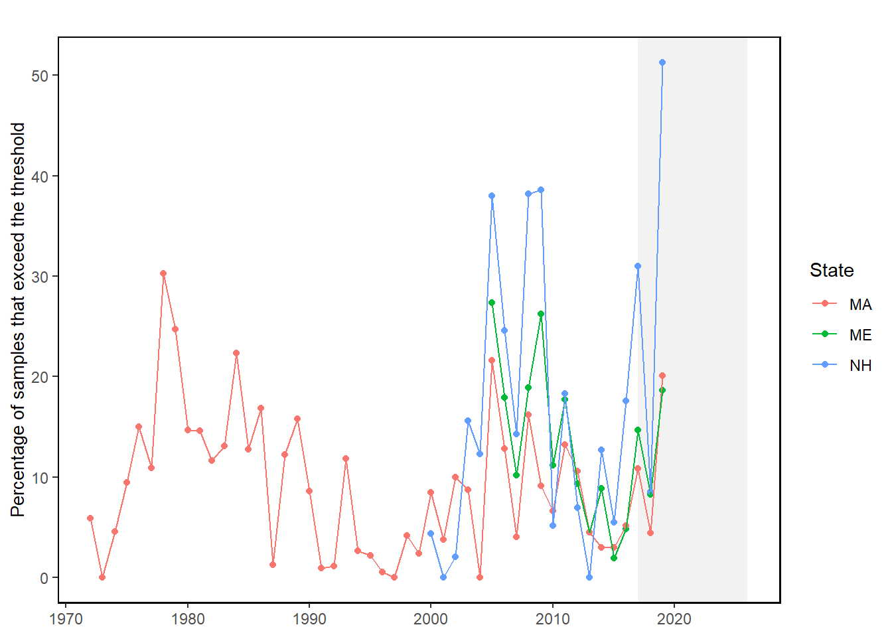

3 Harmful Algal Blooms
Last updated July 23, 2026
Description: These data represent annual estimated abundance of Alexandrium catanella cysts in the Gulf of Maine from 2003 to 2023.
Contributor(s): Yizhen Li, Moe Nelson
Affiliations: NOAA/NOS NCCOS Stressor Detection and Impacts Division, HAB Forecasting Branch
Indicator Family:
Indicator Category:
Synthesis Theme:
3.1 Introduction to Indicator
Alexandrium cysts in sediments of the Gulf of Maine have been monitored through a cooperative effort of NOAA, WHOI, and other partners for over twenty years. Sampling methods are described in Anderson et al. 2005 [8]. In the annual survey cruises, samples are obtained with a Craib corer, and Alexandrium cysts are counted from the top 1- cm of sediment layer. Results are extrapolated to estimate overall cyst abundance in the eastern, western, and entire Gulf of Maine.
3.2 Key Results and Visualizations
Visualizations of the data include an annual time series plot of estimated cyst abundance, and a time series of maps depicting the spatial and temporal variability in the Gulf of Maine. Results are plotted as estimated total numbers of cells (10 to the 16th power) in Eastern Gulf of Maine (east of Penobscot Bay), Western Gulf of Maine (west of Penobscot Bay), Bay of Fundy, and entire Gulf of Maine.
Alexandrium, Mid-Atlantic
#> NULLPSP, Mid-Atlantic
#> NULLAlexandrium, New England

PSP, New England

3.3 Implications
The annual fall surveys of Alexandrium cyst distribution and abundance in the Gulf of Maine provide data needed to predict bloom events in the following year. Other key variables in the predictive models include currents, nutrients, temperature, and salinity dynamics at multiple spatial and temporal scales [9]. After strong cyst deposition events in 2005 and 2009, the time series suggest lower overall cyst abundance through 2023. The cyst abundance in the 2023 survey was relatively low, and a low to moderate bloom year was predicted for 2024 (Li et al. 2024). Bloom events and shellfishery closures usually occur somewhere in any given year. Economic impacts to inshore shellfisheries (mussels, softshell clams, quahogs) can be substantial [10]. Impacts to offshore shellfisheries can occur as well, for example surf clam and ocean quahog on Georges Bank 1988-1990 [11].
3.4 Indicator statistics
Spatial scale: Results are reported for the entire Gulf of Maine, and parsed by sub-regions: Eastern Gulf of Maine (east of Penobscot Bay), Western Gulf of Maine (west of Penobscot Bay), and Bay of Fundy.
Temporal scale: Cyst are sampled in the fall and winter months, and reported annually.
Variable definitions
3.5 Get the data
Point of contact: EDAB, edab.data@noaa.gov
ecodata dataset: ecodata::habs
Tech Doc link: https://noaa-edab.github.io/tech-doc/habs.html